Mechanical Design Project
Pumpjack Kinematic Modeling and Geometry Optimization
Developed a CAD and MATLAB-based workflow to model the kinematics of an HG bent-pumpjack, analyze stroke-length behaviour, and determine the geometry required to model a HG 456-256-144 unit with 144", 120", and 100" stroke lengths.
The project combined mechanical design, linkage analysis, kinematic simulation, and geometry optimization to transition from an approximate CAD model to a kinematically calibrated pumpjack model.
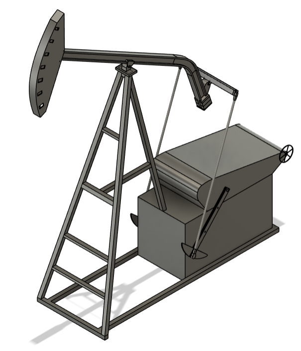
Problem Statement
Pumpjacks convert rotational motion into reciprocating motion through a complex linkage system. Although standard stroke lengths such as 144", 120", and 100" are commonly referenced, the relationship between geometry, crank radius, and resulting stroke length is not immediately obvious.
The objective was to develop a representative HG bent-pumpjack model and determine how system geometry influences stroke length and kinematic response.
Objective
Build a CAD and simulation workflow capable of modeling pumpjack kinematics, evaluating system response, and determining the dimensions required to achieve specific target stroke lengths.
Engineering Workflow
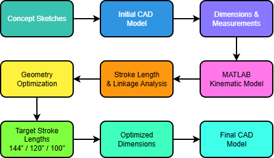
1. Concept Sketching
Created right-side and isometric sketches of an HG Bent pumpjack to understand component relationships and overall geometry.
2. Initial CAD Model
Developed a first-pass CAD model using dimensions estimated from photographs and publicly available reference material.
3. MATLAB Kinematic Model
Extracted geometry from the CAD model and developed a MATLAB simulation to evaluate linkage motion throughout a complete 360° rotation.
4. Optimization & Redesign
Used simulation results to determine the scaling and geometry changes required to achieve target stroke lengths.
Initial Design
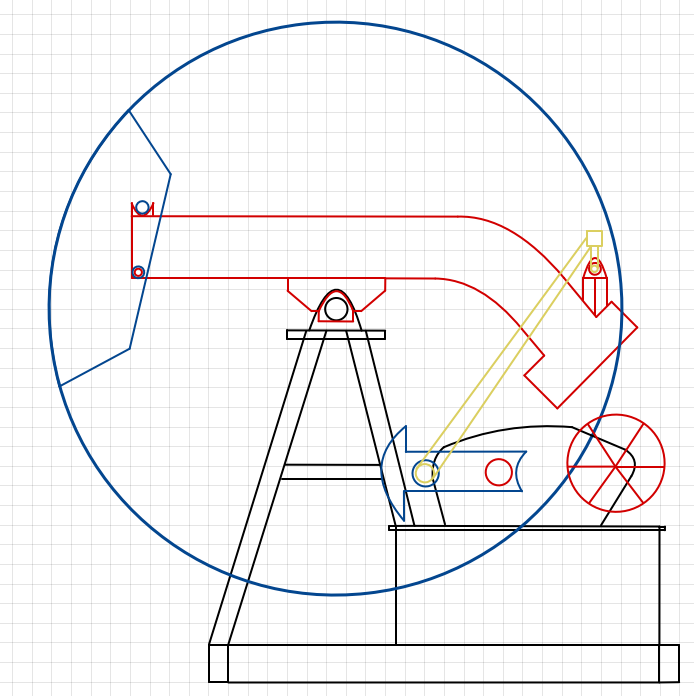
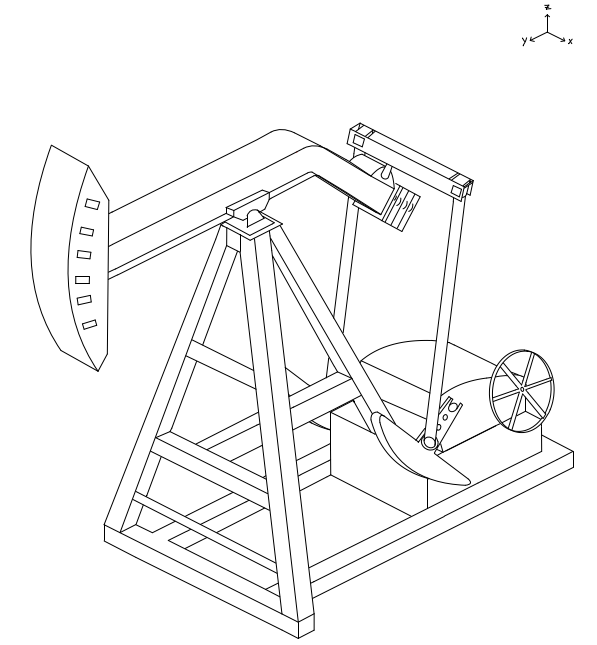
Initial Model
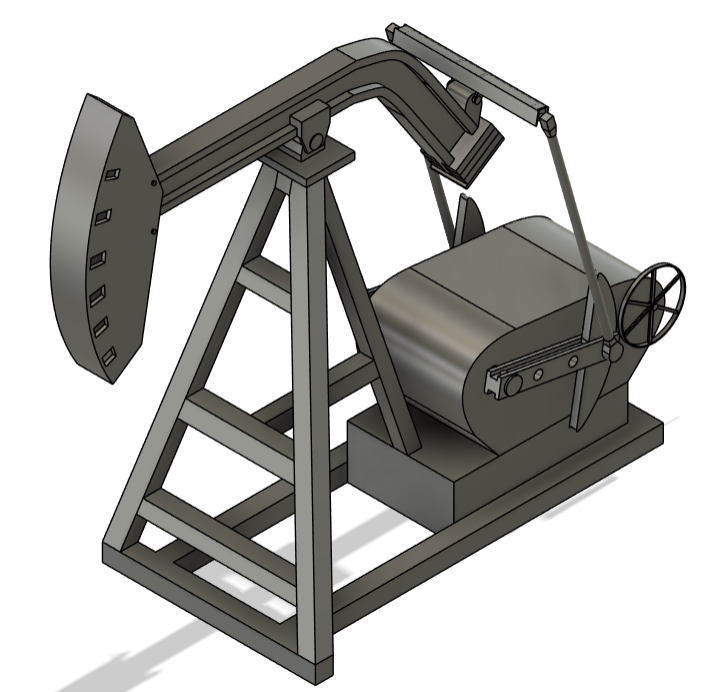
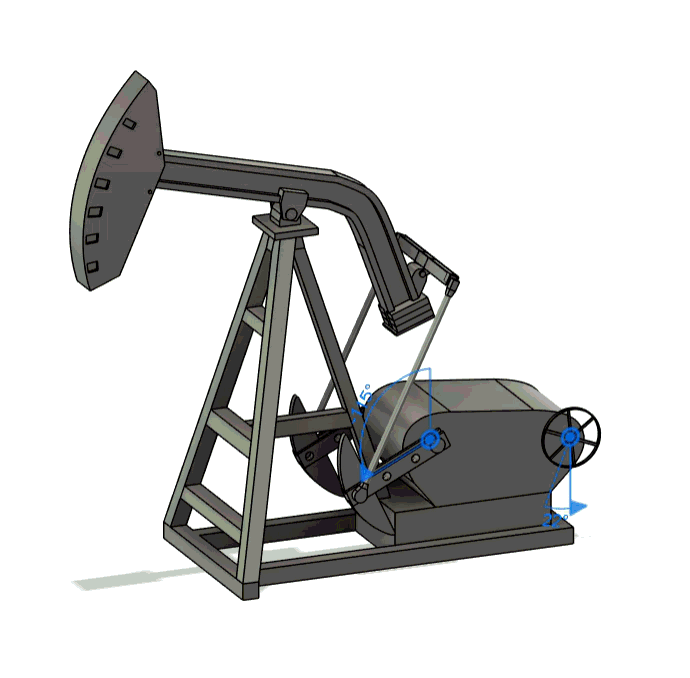
Kinematic Modeling
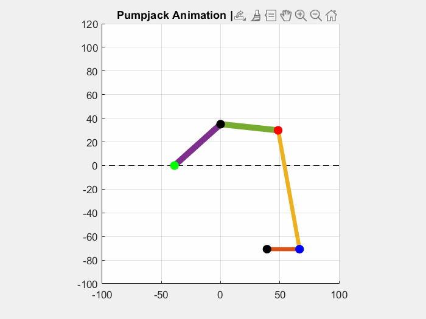
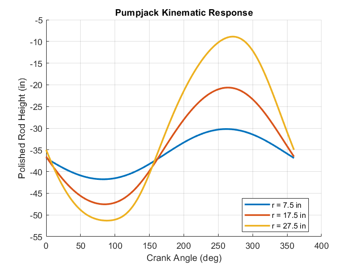
Optimization Analysis
Parametric studies were performed using the MATLAB model to quantify how pumpjack geometry influences stroke length. These investigations were used to identify limitations of the initial design and determine the geometric modifications required to achieve target stroke lengths.
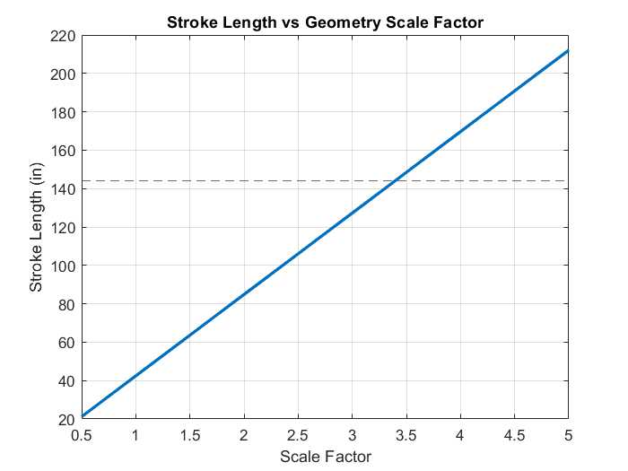
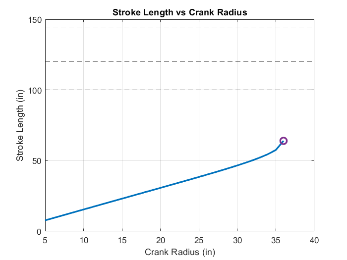
Model Validation
To validate the optimized geometry, the redesigned linkage was run back through the MATLAB kinematic model and compared against the expected stroke-length behaviour. This confirmed that the updated geometry produced the intended pumpjack motion and provided a check against the CAD redesign.
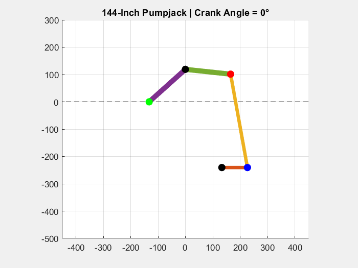
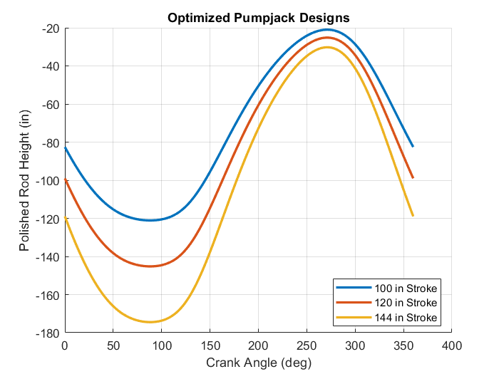
Optimization Results
The MATLAB model was expanded to investigate the relationship between geometry and stroke length.
| Stroke Position | 100" | 120" | 144" |
|---|---|---|---|
| Initial Design | 11.6" | 26.9" | 42.4" |
| Optimized Design | 99.4" | 120.5" | 144.1" |
| Error | 0.6" | 0.5" | 0.1" |
3 / 3
Targets Achieved
0.6"
Maximum Error
3.4×
Scale Factor
Key Findings
- Parametric analysis indicated that the original geometry required approximately a 3.4× scale factor to achieve a 144-inch stroke.
- Crank radius was identified as a primary driver of stroke length and established a practical upper limit on achievable stroke.
- Stroke length is strongly influenced by crank radius and linkage geometry.
- The crank design needed to be adjusted to reflect the proper scale factor.
- The initial CAD model provided a useful basis for developing a representative kinematic model.
- Simulation enabled design modifications prior to rebuilding the CAD model.
Final Optimized Design
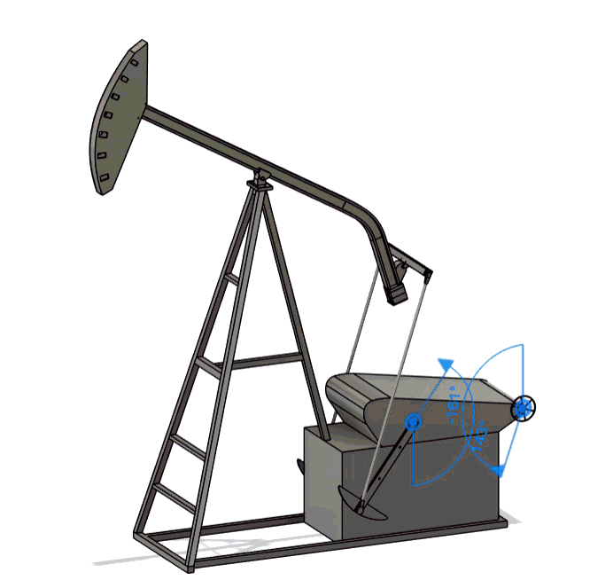
Model Limitations & Future Work
- Target stroke lengths were achieved with less than 1" error.
- The optimization prioritized kinematic performance over realistic pumpjack proportions.
- The resulting geometry is representative but not dimensionally accurate to a production unit.
- Future work could incorporate geometric constraints to improve realism.
Technical Skills Demonstrated
- Mechanical design
- Linkage kinematics
- CAD modeling
- MATLAB simulation
- Engineering optimization
- Parametric analysis
Technical Stack
| Tool | Purpose |
|---|---|
| Autodesk Fusion | CAD modeling and geometry development |
| MATLAB | Kinematic modeling and optimization |
| Engineering Sketching | Concept development and system understanding |